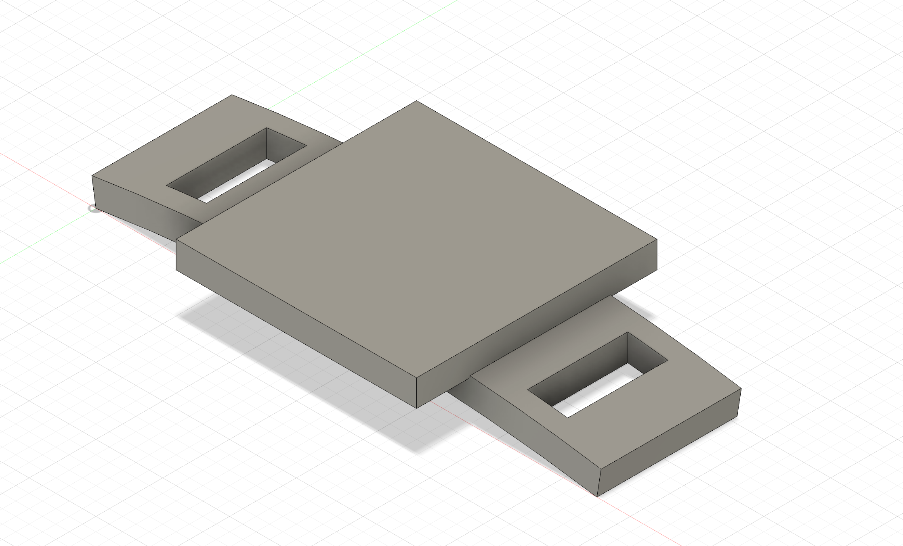

後期サーキュラーデザイン
湘南貿易さんと神奈川大学


後期に行うプロジェクトは「サーキュラーデザイン」がテーマになる循環型社会を目指す湘南貿易さんとのコラボレーションになる。
私たちのみなとみらいキャンパスでは毎日大量のゴミを回収していて、横浜市の厳しい基準を通過するように分別をしてくれている人たちがわたしたちの知らないところで作業していた...
私たちがゴミ箱にゴミを入れる段階で分別できるようになっているが、きちんと分別している学生がごく少数であると判明した。特にひどいゴミはペットボトルに吸い殻をパンパンに詰め込んでいたゴミだ。
今回のプロジェクトではペットボトルキャップを溶かして作る製品を開発する。キャップの色によって製品に個性を出すことができる。このキャップの再利用を通じて神奈川大学の中で小さいが循環型社会形成を目指す
サイズは最大20mm X 5mmで小さな製品になってしまうが各班のコンペで知恵を絞り出す。
考えた作品



私の班ではシューレースアクセサリーを考えついた。小さくてコンパクトでカラーによって可愛く仕上がると思う。
ベースとなる形は簡単に完成した。問題はデザインだ。私の理想は様々な企業のキャラクターとコラボしデザインに採用したかったが、権利の関係で難しい。
なので今回はベース、丸、三角、四角で提出し発表した。無事コンペでは採用していただき、その後は湘南貿易さんが選んだ数種類の中でまた一つに絞るとのことだ。
採用され完成した作品

年末年始が明け湘南貿易さんが完成した金型を持ってきてくださった。選ばれたのは熊さん型のカップホルダー。
33回試作を行ったが成功と言える作品は1つしか完成しなかった。金型の中で溶かしたキャプがすぐに固まってしまうことが原因で失敗してしまったようだ。